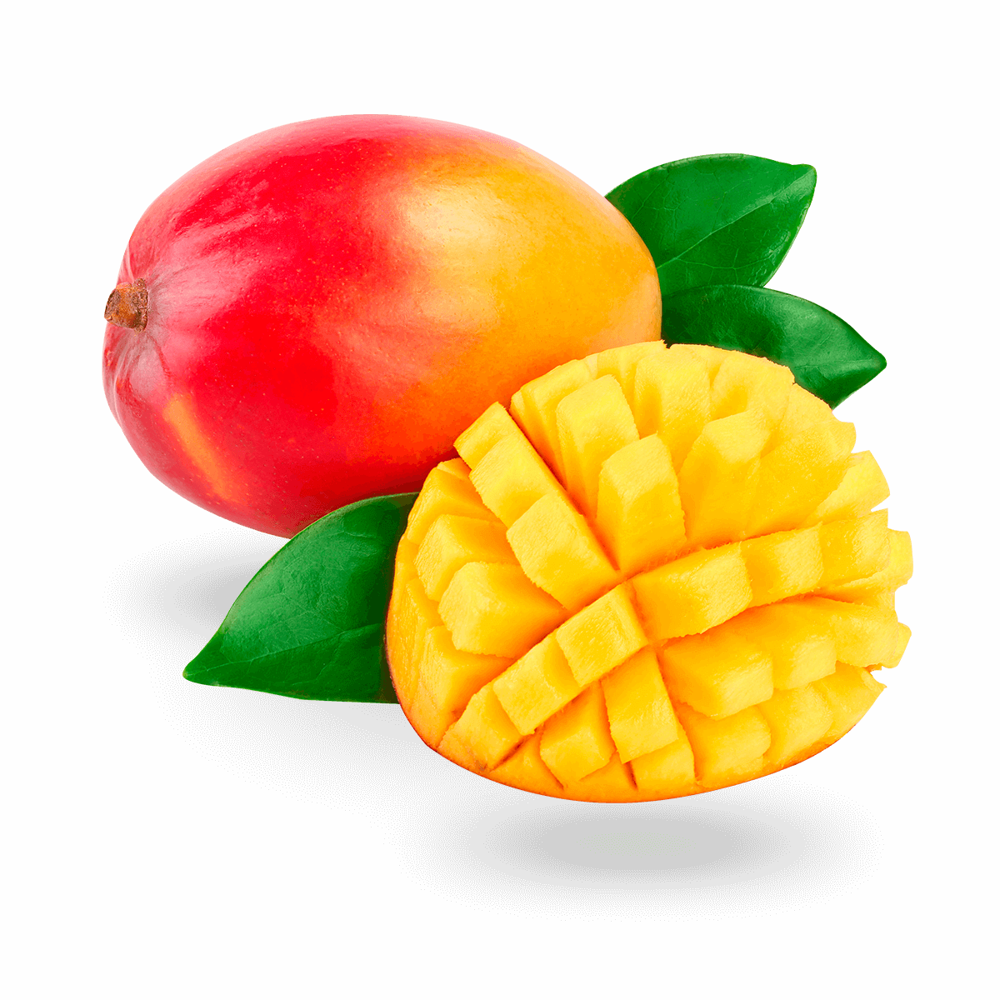

Manqo

Manqo , Mangifera indica tropik ağacı
tərəfindən istehsal olunan yeməli daş meyvədir . Myanmanın şimal-qərbi ,Banqladeş və Hindistanın şimal-şərqi
arasındakı bölgədən yaranmışdır . Indica qədim zamanlardan
Cənubi və Cənub-Şərqi Asiyada becərilir və nəticədə iki növ müasir manqo sortları yaranır: "Hindistan növü" və
"Cənub-Şərqi Asiya növü". Mangifera cinsinin digər növləri də "manqo" adlanan yeməli meyvələr istehsal
edir, onların əksəriyyəti Maleziya ekoregionunda olur.
Dünyada manqonun yüzlərlə çeşidi var . Çeşiddən asılı olaraq, manqo meyvəsi açıq sarı, qızılı, yaşıl və ya
narıncı ola bilən ölçüsü, forması, şirinliyi, dəri rəngi və ətinin rənginə görə dəyişir.Manqo Hindistan ,
Pakistan və Filippinin milli meyvəsidir , manqo ağacı isə Banqladeşin milli ağacıdır .
Manqo ağacları 10-15 m (33-49 fut) tac radiusu ilə 30-40 metr (98-131 fut) hündürlüyə qədər böyüyür. Ağaclar
uzunömürlüdür, çünki bəzi nümunələr 300 ildən sonra hələ də meyvə verir.
Dərin torpaqda kök kökü 6 m (20 fut) dərinliyə enir, bol, geniş yayılmış qidalanma kökləri və lövbər kökləri torpağa
dərindən nüfuz edir. Yarpaqları həmişəyaşıl , alternativ, sadə, uzunluğu 15–35 santimetr və 6–16 sm geniş; yarpaqlar
cavan olduqda narıncı-çəhrayı olur, yetkinləşdikcə sürətlə tünd, parlaq qırmızıya, sonra tünd yaşıl rəngə çevrilir.
Quava
Təxminən 100 növ var. Vətəni Meksika , Mərkəzi Amerika və Cənubi Amerikanın şimalıdır . Bu gün Cənubi Asiya , Havay , Karib dənizində becərilir və Afrika .
Ən məşhur cins , dünyada "guava" kimi də tanınan alma guavasıdır.
Quava Myrtoideae cinsinin tipik üzvüdür . Uzunluğu 5 ilə 15 sm arasında dəyişən tünd yaşıl, əks istiqamətli, sadə, elliptik və ya oval yarpaqlara malikdir. Çiçəkləri ağ rəngdədir və 5 ləçəkdən ibarətdir və müxtəlif kişi reproduktiv orqanlarını ehtiva edir.
Bununla belə, onlar Latın dilindəki "Psidium" prefiksi ilə eyniləşdirilməsələr də, Accara və Feijoa ( Alabaster ağacı ) cinsləri rəsmi olaraq (Quava) ailəsinin üzvü kimi qəbul edilir.
Guava və onun növləri Malay , Qərbi Hind Okeanı, Suahili , Sinhala və Benqal dillərində təsvir edilmişdir , çünki Peranın armuddan təsirləndiyi düşünülür .
Bununla belə, latın, ispan və s. ilə heç bir əlaqəsi olmadan bu meyvəyə unikal adlar verən cəmiyyətlər var.O, bir çox Avropa dillərinə uyğunlaşdırılmışdır: guava ( rumın , isveç , danimarka və norveç), holland və alman dillərində guave ), goyave ( fransız ), gujawa ( polyak ), portuqal dilində goiaba .
Pitaya
Ən əhəmiyyətli və ümumi olanlar Hylocereus cinsindən olanlardır.
Bununla belə, bu cinsdən başqa, Stenocereus ( turş pitaya ) cinsinin kaktus növlərinin meyvələri də bu adla dünyada müxtəlif insanlar tərəfindən tanınır və bu növün meyvələri də müxtəlif ölkələrdə becərilir alimlər Hylocereus cinsini müstəqil cins kimi deyil, Stenocereus ailəsi daxilində göstərirlər. Bundan əlavə, Peru alma kaktus ( Cereus repandus ), nadir cins ( Cereeae ) pitaya kimi də tanınır.
Buna ingiliscə əjdaha meyvəsi də deyilir . İngilis dilində olan bu ad Asiya dillərindəki adlarının tərcüməsidir. Buna Çincə "od əjdaha meyvəsi" və lóng zhū guǒ "əjdaha ləl-cəvahirat meyvəsi", Vyetnam thanh long ( yaşıl əjdaha ), İndoneziya buah naga "əjdaha meyvəsi" deyilir.
Bundan əlavə, müxtəlif cəmiyyətlər tərəfindən çiyələk armudu adlanır .
pitaya istehsal edən kaktusların vətəni Meksika , Mərkəzi Amerika və Cənubi Amerikadır . Bundan əlavə, Asiyada istehsal olunur və becərilən növlər İndoneziya , Cənubi Java , Tayvan , Vyetnam , Tayland , Filippin , Şri Lanka , Malayziya və son zamanlarda Banqladeşdə yetişdirilir . [1] Okinavada , Havayda , İsraildə , Avstraliyanın şimalında və Çinin cənubunda da yetişdirilir . Son illərdə Türkiyənin Adana və Mersin vilayətlərində istehsalına başlanılıb.
Durian
Durian cinsinə aid bir neçə ağac növünün yeməli meyvəsidir . 30 tanınmış Durio növü var , onlardan ən azı doqquzu yeməli meyvələr verir.Borneo və Sumatradan olan Durio zibethinus beynəlxalq bazarda mövcud olan yeganə növdür. 1987-ci ildən etibarən Taylandda 300-dən çox, Malayziyada isə 100-dən çox adlı sort var. Digər növlər öz yerli bölgələrində satılır.
Durian böyük ölçüsü, kəskin qoxusu və tikanla örtülmüş qabığı ilə fərqlənir . Meyvənin uzunluğu 30 sm (12 düym) və diametri 15 sm (6 düym) qədər böyüyə bilər və adətən 1 ilə 3 kq (2 ilə 7 lb) arasında olur. Növlərdən asılı olaraq forması uzunsovdan yuvarlaq, qabığının rəngi yaşıldan qəhvəyiyə, əti isə açıq sarıdan qırmızıya qədər dəyişir.
Bəzi insanlar durianın xoş, şirin bir qoxu olduğunu düşünür, digərləri isə ətri həddindən artıq güclü və xoşagəlməz hesab edir. Qoxu dərin təqdirdən tutmuş güclü iyrəncliyə qədər reaksiyalar doğurur. Onun qoxusunun bir neçə gün davam edə bilməsi Cənub-Şərqi Asiyada bəzi otellər və ictimai nəqliyyat xidmətlərinin meyvəni qadağan etməsinə səbəb olub. Ət müxtəlif yetişmə mərhələlərində istehlak edilə bilər və Cənub-Şərqi Asiya mətbəxlərində müxtəlif şirin desertlərin və ləzzətli yeməklərin dadını vermək üçün istifadə olunur . Toxumları bişirildikdə də yeyilə bilər.
Pomelo
Rutaceae ailəsindən olan pomelo ən böyük sitrus meyvəsidir və qreypfrutun əsas əcdadı . Cənub-Şərqi Asiyadan olan təbii, hibrid olmayan, sitrus meyvəsidir . Şirin qreypfruta bənzər dadına görə, pomelo Cənub-Şərqi Asiya və Şərqi Asiyada adətən istehlak edilir və bayram tədbirləri üçün istifadə olunur. Qreypfrutda olduğu kimi, pomelonun tərkibindəki fitokimyəvi maddələr də dərmanlarla qarşılıqlı təsir potensialına malikdir .
Pomelo ağacının hündürlüyü 5-15 metr (16-50 fut), ehtimal ki, 10-30 santimetr (4-12 düym) qalınlığında əyri gövdəsi və aşağı asılmış, nizamsız budaqları ola bilər. Onların yarpaq ləçəkləri açıq şəkildə qanadlıdır, alternativ, yumurtavari və ya elliptik formaları 5-20 sm (2-8 düym) uzunluğunda, dərisi, tutqun yaşıl üst təbəqəsi və alt yarpaqları tüklüdür.Çiçəklər - tək və ya salxımlı - ətirli və sarı-ağ rəngdədir.
Meyvəsi iri, diametri 15–25 sm (6–10 düym), adətən 1–2 kiloqram (2–4 funt) ağırlığındadır. Qreypfrutdan daha qalın qabığa malikdir və 11-18 seqmentə bölünür. Əti yumşaq qreypfruta bənzəyir, bir az ümumi acılığı ilə (qreypfrut pomelo və portağalın hibrididir).Seqmentləri əhatə edən membranlar çeynənən və acıdır, yeyilməz hesab olunur və adətən atılır. Ən azı altmış növ var.Meyvənin tərkibində ümumiyyətlə bir neçə, nisbətən böyük toxum var, lakin bəzi növlərdə çoxlu toxum var.
Papaya
Papaya bitki növüdür Carica papaya , Caricaceae fəsiləsinin Karika cinsinə aid 21 növdən biri və həmçinin meyvəsinin adı. İlk dəfə Mesoamerikada , müasir Meksikanın cənubunda və Mərkəzi Amerikada əhliləşdirildi . Bir neçə ölkədə tropik iqlimi olan bölgələrdə becərilir. 2022-ci ildə Hindistan dünyada papayanın 38%-ni istehsal edib.
Papaya sözü İspan vasitəsilə Aravak dilindən gəlir və həm də bitkinin adıdır. Papaw və ya pawpaw adı yalnız bəzi bölgələrdə meyvə üçün alternativ olaraq istifadə olunur.
Papaya kiçik, seyrək budaqlı ağacdır , adətən tək gövdəsi 5 ilə 10 m (16 ilə 33 fut) arasında, gövdənin yuxarı hissəsində spiral şəkildə düzülmüş yarpaqları ilə böyüyür . Aşağı gövdə yarpaqların və meyvələrin çıxdığı yerlərdə nəzərəçarpacaq dərəcədə yaralıdır . Yarpaqları böyük, diametri 50-70 sm (20-28 düym), dərin palma loblu, yeddi loblu. Bütün bitki hissələrində oynaqlı laticiferlərdə lateks var .